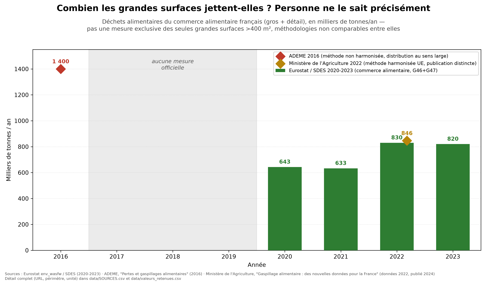
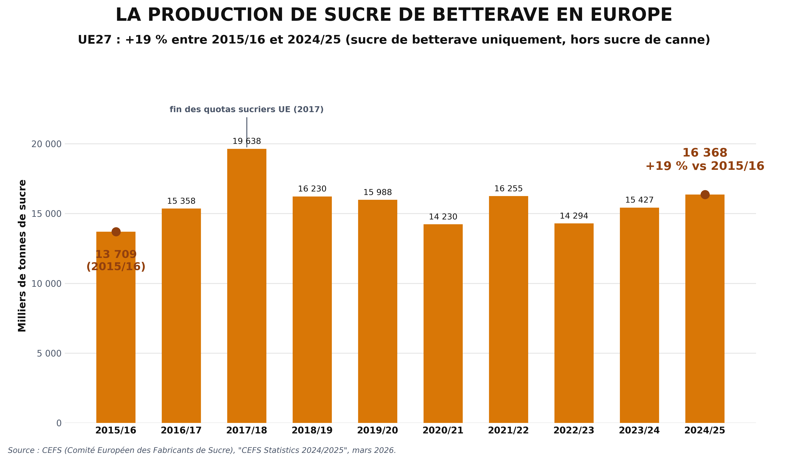

Deux constats chiffrés sur l'agroalimentaire français
Juillet 2026
Combien de nourriture les grandes surfaces françaises jettent-elles chaque année ? Personne ne le sait précisément. C'est le premier résultat de cette étude.
Ce qu'on sait : depuis 2020, une mesure harmonisée européenne existe. En 2023, le commerce alimentaire français (gros + détail) a généré 820 000 tonnes de déchets alimentaires, environ 2 200 tonnes par jour.
Tout n'était pas consommable, mais une partie de ces déchets était encore de la nourriture.

Sources : Eurostat (env_wasfw) / SDES 2020-2023 · ADEME 2016 · Ministère de l'Agriculture (données 2022, publ. 2024)
Et derrière chaque tonne jetée, c'est toute la chaîne en amont qui a été mobilisée pour rien : des terres cultivées, de l'eau, des engrais, du carburant, du travail, des animaux élevés, des émissions de gaz à effet de serre.
Dans la nature, rien ne se perd. Ce qu'un être rejette en nourrit un autre ; les oiseaux, eux, ne produisent aucun déchet.
Nous nous croyons l'espèce la plus intelligente. Mais une espèce vraiment intelligente jetterait-elle 820 000 tonnes de nourriture par an, sans même savoir les compter ?
On nous parle d'urgence pour sauver la filière betterave. En regardant les chiffres, ça ne colle pas : ils se sont trompés d'urgence. C'est celle des écosystèmes et de la biodiversité qu'il faut sauver.

Source : CEFS, « CEFS Statistics 2024/2025 », mars 2026
Sur les dix dernières campagnes, l'UE27 a produit en moyenne 15,75 millions de tonnes de sucre de betterave par an. La production 2024/25 est même 19 % plus haute qu'en 2015/16. Une filière qui s'effondre, ça ne ressemble pas à ça.
Seulement 10 % de ce sucre finit dans nos assiettes. Le reste :
| Usage | Part |
|---|---|
| Alimentation directe (nos assiettes) | 10 % |
| Industrie agroalimentaire transformée (boissons, sodas, produits laitiers, confiserie) | 60 % |
| Alcool / bioéthanol | 20 % |
| Chimie / pharmacie | 10 % |
Source : Cultures Sucre
Gaspillage alimentaire des grandes surfaces
Betterave sucrière et pesticides